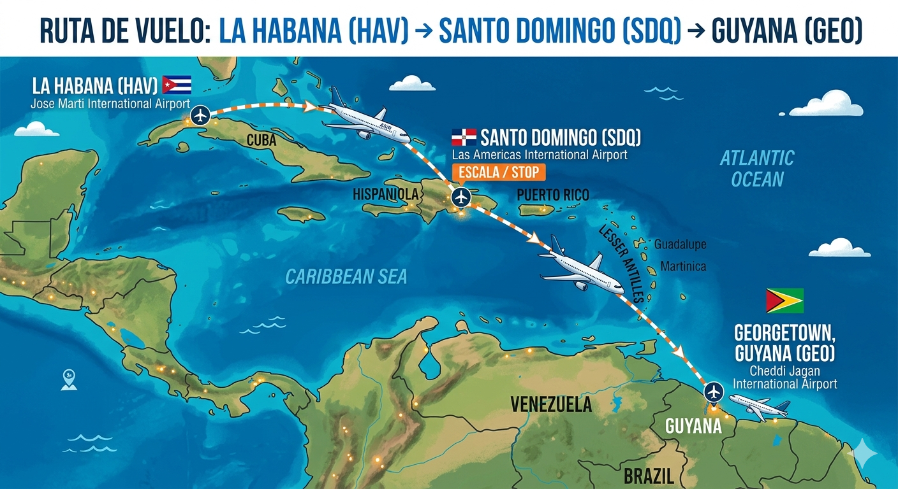
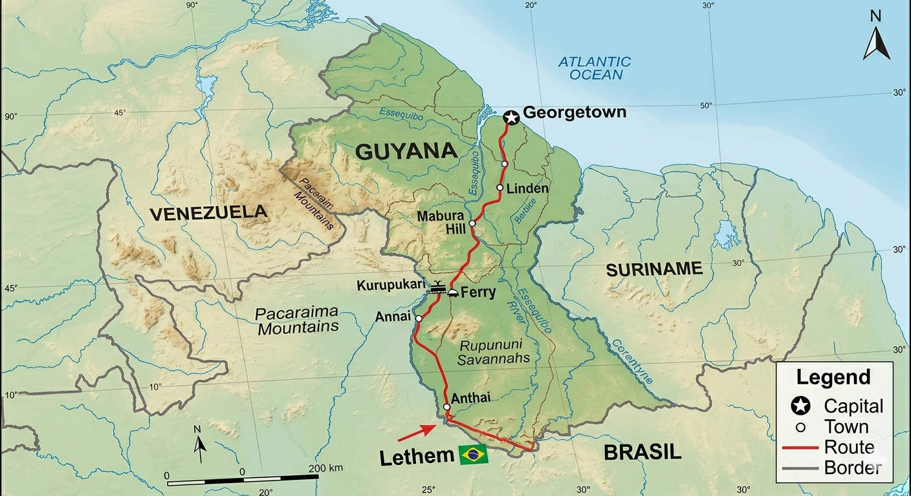

Estoy reuniendo fondos para sacar a mi familia de Cuba y ayudarlos a comenzar una nueva etapa con seguridad, estabilidad y dignidad.
Esta causa es por mi padre, mi madre, mi hermana, la madre de mi esposa y la hermana de mi esposa. Cada aporte me acerca a poder moverlos, apoyarlos y sostener el proceso.
No estoy pidiendo ayuda por comodidad. Estoy tratando de abrir una salida real para personas que amo. Esta campaña nace de una necesidad concreta y de la esperanza de reunir a mi familia en un entorno más seguro.
EN QUÉ SE USARÁ
01
Documentación, trámites y procesos necesarios para la salida.
02
Pasajes, traslados y costos de movilidad durante el proceso.
03
Apoyo inicial para vivienda, alimentación y adaptación al llegar.
VIOLACIONES DE DERECHOS HUMANOS EN CUBA
Esta campaña nace también de una realidad insoportable. Mi familia sigue viviendo bajo una dictadura marcada por represión, vigilancia, miedo, pobreza extrema y una violación constante de derechos humanos fundamentales.
En Cuba la crisis no se siente en abstracto: se vive en apagones interminables, falta de agua, inseguridad alimentaria, escasez de combustible y una vida diaria dedicada a “resolver” lo básico para sobrevivir. Mientras tanto, muchas ayudas y productos esenciales terminan en circuitos de venta en dólares inaccesibles para la mayoría.
También existe una brecha cruel entre la población y la élite del poder. Mientras millones viven con carencias, figuras cercanas al régimen exhiben privilegios y se burlan públicamente del sufrimiento del pueblo, profundizando la sensación de abandono e impunidad.
Hablar libremente, disentir, protestar o intentar construir un proyecto de vida con independencia puede traer vigilancia, hostigamiento, cárcel o castigo. Por eso estamos usando esta vía: no porque sea fácil, sino porque para nosotros se ha convertido en la única salida real para sacar a mi familia de ahí.
CÓMO SERÁ EL VIAJE Y CUÁNTO CUESTA

Primera etapa: salida aérea desde La Habana hacia Georgetown, con escala en Santo Domingo.

Segunda etapa: trayecto por Guyana hasta Lethem, en la frontera con Brasil, como parte del recorrido hacia la regularización.
¿Cuánto cuesta?La ruta prevista comienza con un vuelo hacia Guyana. Cada pasaje cuesta aproximadamente entre $1,250 y $1,500 USD por persona, lo que equivale a entre R$ 6.250 y R$ 7.500 por persona.
¿Qué condiciones deben cumplir?Esos boletos deben comprarse obligatoriamente de ida y vuelta, porque Guyana no permite otra modalidad para este tipo de entrada. En el papel deben viajar como turistas, aunque ese no sea su verdadero fin.
¿Por qué Guyana y no Brasil directamente?Porque, según la realidad migratoria que enfrentamos, Brasil no permite que ciudadanos cubanos sin visa entren directamente por vía aérea al país para luego pedir asilo en el aeropuerto.
¿Y por qué no solicitar primero la visa?Porque en la práctica, debido a la pobreza extrema en la que viven la mayoría de las personas en Cuba, esa visa casi nunca es concedida. Para familias como la mía, esa vía termina cerrada antes de empezar.
¿Salimos de Cuba... ahora qué?Después de llegar a Guyana, tendrían que hacer un trayecto peligroso hasta Brasil. Es una ruta dura, riesgosa y real: incluso podrían perder la vida en el camino. Aun así, ese riesgo se percibe hoy como menor que permanecer atrapados en Cuba sin salida.
¿Cómo me legalizo en Brasil?Una vez en Brasil, la idea es solicitar asilo para regularizar su situación migratoria. Estamos recurriendo a este camino porque es, en los hechos, la única vía que hemos encontrado para sacar a mi familia de allí.
POR QUIÉNES ESTOY LUCHANDO
Estas son fotos de las personas que más me importan y del motivo real de esta pelea. Cada rostro aquí es una razón concreta para no rendirme.
CÓMO APOYAR
Si deseas ayudar, aquí encontrarás las formas disponibles para apoyar esta causa y acercarnos un poco más a reunir a mi familia.
PayPal
Útil para personas que prefieren donar rápido con un enlace directo y reconocido internacionalmente.
Próximamente
PIX / Transferencia
Si deseas apoyar desde Brasil, puedes hacerlo por PIX. Mi código PIX es mi correo electrónico.
eliezerprieto4626@gmail.com
MI CONTACTO
Si deseas comunicarte conmigo directamente para apoyar, verificar información o hablar sobre esta causa, puedes hacerlo por cualquiera de estas vías.